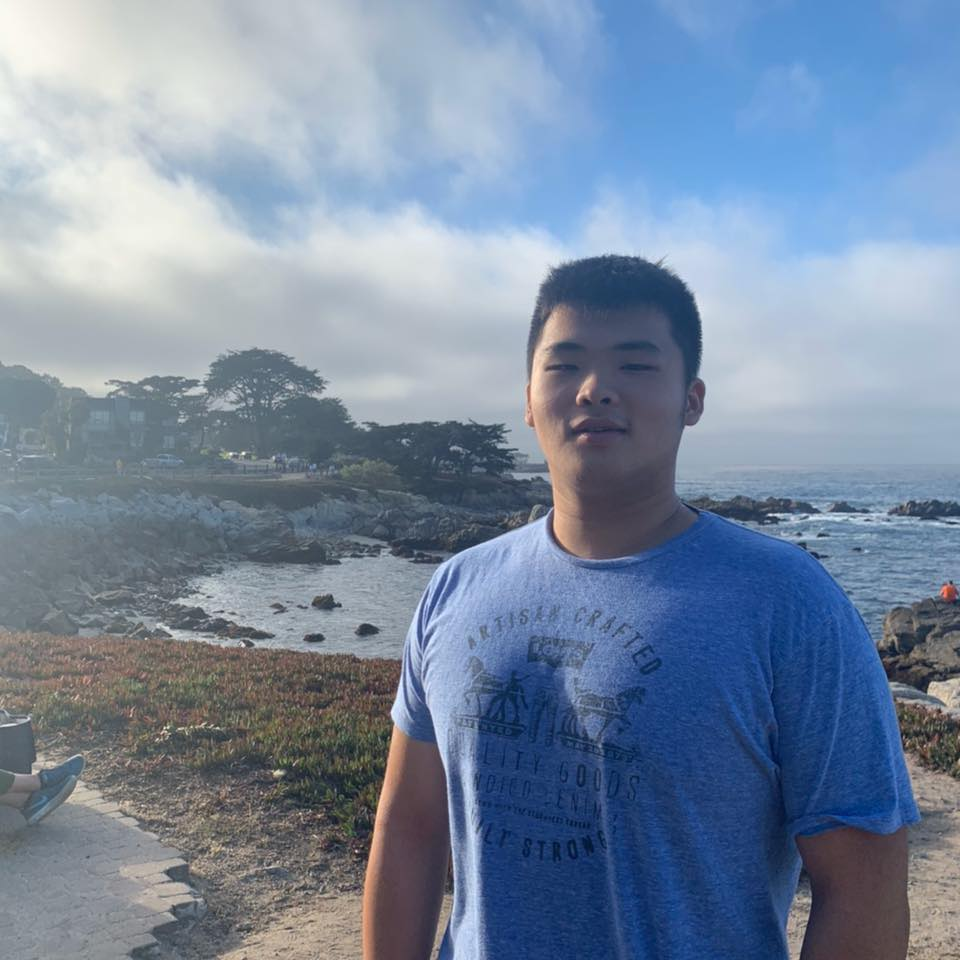
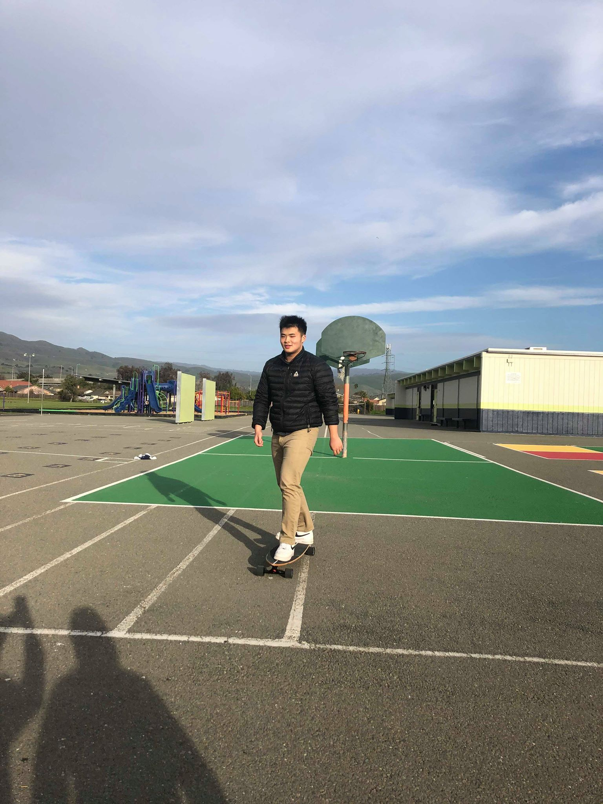
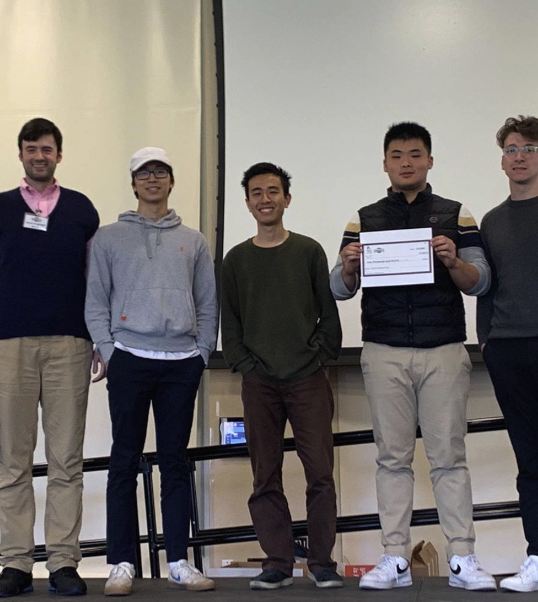
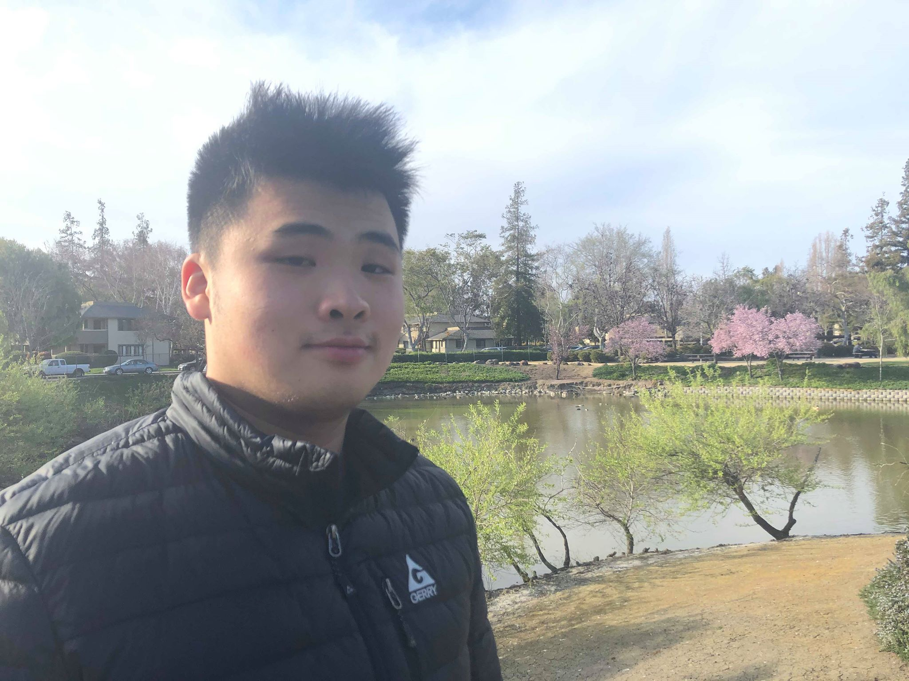

A little bit more about me.
I was born in Mountainview, CA and then spent the early years of my life in Saratoga. Soon afterward my family moved backed to Taiwan. Where I lived the majority of my life. I even went to a high school in Taiwan where I had to wear a pink school uniform every week. Because of this, I identify as a third culture kid.
My dad worked in technology his whole life and always brought his work home. Which caused me to develop an aptitude for technology early on in my life. From a young age, I learned that technology is incredibly dynamic. It requires constant learning of new topics built upon fundamentals. The reason why I am passionate about computing is because of how accessible it is to learn. I can build and learn so many things regarding computing just with my laptop
I am interested in a wide range of topics in computing. At the same time, I am still discovering more technologies and finding my niche. My current practical experiences have pointed me toward data science and web development. Currently, I am very interested in the relationship between wellbeing and technology. I want people to develop a healthier relationship with the technology in their lives, without compromising the services they provide.
Fun Photo Album

This is me at Carmel

Skating at a randoom elementary school

Photo of me and my team winning hack for humanity (bad photo of me)

Fun photo I took for this website